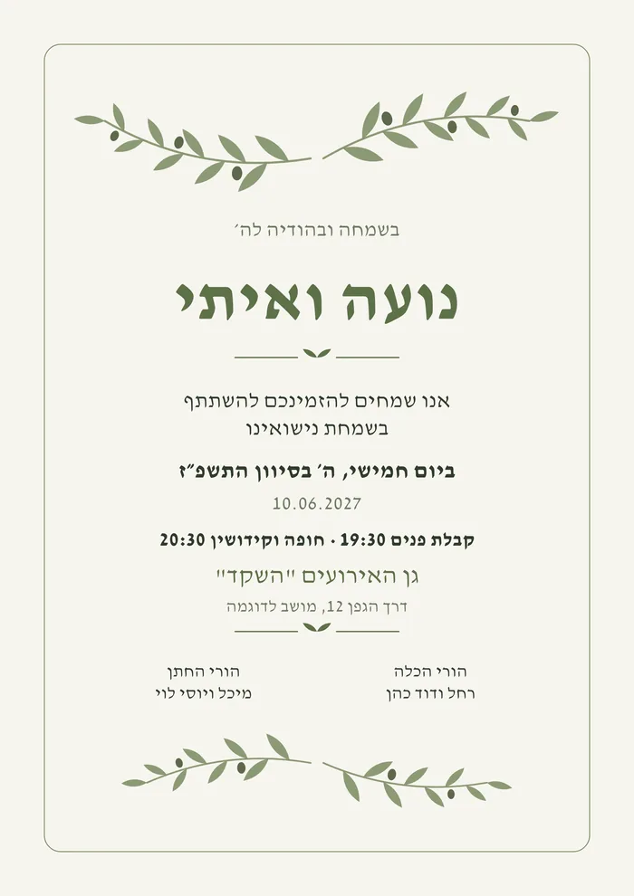
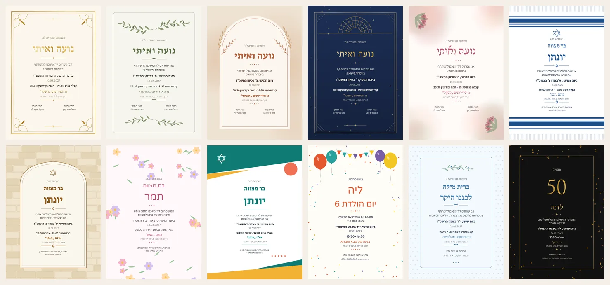
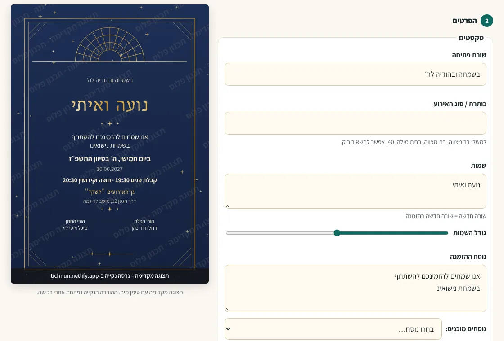
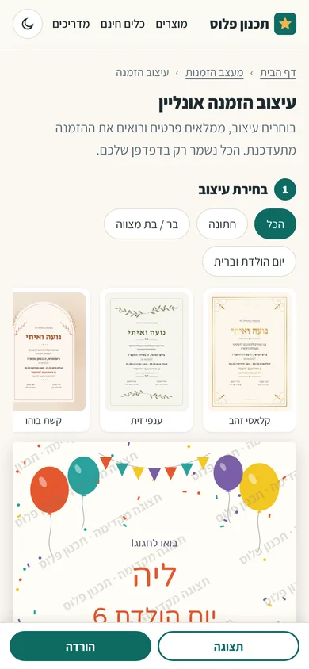
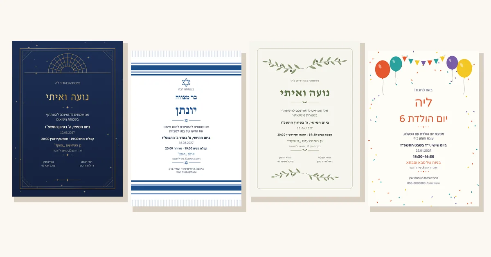

עיצוב הזמנה אונליין: בעברית, עם תאריך עברי, תוך 5 דקות
בוחרים עיצוב, ממלאים שמות, תאריך ומקום, ורואים את ההזמנה מוכנה. לחתונה, בר/בת מצווה, יום הולדת וברית.
- 12 עיצובים מקוריים
- תאריך עברי אוטומטי
- PNG לוואטסאפ + PDF לדפוס
- בלי הרשמה, הכל בדפדפן
מעצבים בחינם ומורידים תצוגה מקדימה עם סימן מים כדי להראות למשפחה. כשהכל מאושר, ₪19 פותחים את ההורדה הנקייה: תמונה באיכות גבוהה לוואטסאפ, ו-PDF מוכן לבית דפוס או להדפסה בבית.
אפשר לקנות כאן או בתוך המעצב, בלחיצה על "הורדה". ההורדות נפתחות בדפדפן שבו משלמים.
מה מקבלים ב-₪19
- PNG נקי באיכות גבוהה (2000×2828) לוואטסאפ, בלי סימן מים
- PDF לבית דפוס (A5 או A6 עם בליד, 300 DPI) או דף A4 עם 2/4 הזמנות להדפסה בבית
- תיקונים והורדות חוזרות בלי הגבלה, גם בעיצובים אחרים
- בחינם כבר עכשיו: כל 12 העיצובים, תאריך עברי אוטומטי ותצוגה מקדימה עם סימן מים
למי זה מתאים
- הזמנה דיגיטלית לוואטסאפ, או קובץ מוכן לבית דפוס
- מי שרוצה תאריך עברי נכון בלי לחשב לבד
- מי שרוצה לראות את ההזמנה מוכנה לפני שמשלמים
ולמי פחות
- מי שרוצה להעלות תמונה או לוגו: כרגע אין אפשרות כזו
- מי שמחפש עיצוב אישי בהזמנה ממעצב/ת גרפי/ת
נסו בחינם

דוגמת הזמנה לחתונה (PNG)
הזמנה בעיצוב "ענפי זית" עם תאריך עברי, באיכות ההורדה הנקייה. השמות בדויים.

בלי תשלום, בלי מייל ובלי הרשמה.
ועוד יותר טוב מדוגמה: הכלי עצמו פתוח לשימוש חינם, ומשלמים ₪19 רק כשרוצים את הייצוא הנקי.
איך זה עובד
משתמשים בחינם
הכלי פתוח לכולם בדפדפן, בלי הרשמה. בודקים שהוא מתאים לכם.
פותחים את הגרסה המלאה
תשלום חד-פעמי ב-PayPal או בכרטיס, בתוך הכלי או בעמוד הזה.
מייצאים מיד
ההורדות הנקיות נפתחות מיד בדפדפן שבו שילמתם. מקבלים גם קישור לדף אישור.
ככה זה נראה
צילומים מהמעצב עצמו. השמות והמקומות בדויים.




מה יש במעצב
12 עיצובים מקוריים
5 לחתונה (קלאסי זהב, ענפי זית, קשת בוהו, לילה מוזהב, אקוורל), 4 לבר/בת מצווה (פסי טלית, אבן ירושלמית, פרחים, מודרני) ו-3 ליום הולדת וברית. לכל עיצוב 3 ערכות צבע וצבע הדגשה חופשי.
תאריך עברי אוטומטי
בוחרים תאריך לועזי, וההזמנה כותבת לבד "ביום חמישי, ה׳ בסיוון התשפ״ז". אפשר להסתיר כל חלק, ולאירוע אחרי השקיעה לבחור "אור ל…".
12 גופנים עבריים חינמיים
פרנק רוהל, דוד, בלפייר, כתב רש״י, סואץ, סקולר ועוד. כולם ברישיון חופשי (OFL), כך שמותר להדפיס בלי חשש.
נוסחים מוכנים
בכל סוג אירוע יש כמה נוסחים להזמנה בלחיצה, ואפשר לכתוב חופשי. שמות ארוכים? הטקסט מתכווץ כדי להיכנס, ויש סרגל לגודל השמות.
PNG לוואטסאפ
תמונה נקייה ברזולוציה 2000×2828, חדה גם במסך גדול. בטלפון אפשר לשתף ישר מהמעצב.
PDF להדפסה
A5 או A6 לבית דפוס עם 3 מ״מ בליד, ב-300 DPI. או דף A4 להדפסה בבית עם 2 או 4 הזמנות וסימני חיתוך.
איך זה עובד
מעצבים בחינם
בוחרים עיצוב וממלאים פרטים. אפשר להוריד תצוגה מקדימה עם סימן מים ולשלוח לאישור.
פותחים הורדה נקייה
תשלום אחד של ₪19 ב-PayPal או בכרטיס אשראי, בלי לצאת מהמעצב.
מורידים ושולחים
PNG לוואטסאפ, PDF לדפוס. טעיתם באות? מתקנים ומורידים שוב.
שאלות נפוצות
מה מקבלים בחינם ומה בתשלום?
בחינם: שימוש מלא במעצב, כל 12 העיצובים, ותצוגה מקדימה להורדה ברזולוציה נמוכה עם סימן מים. בתשלום של ₪19: PNG נקי באיכות גבוהה ו-PDF להדפסה (A5 או A6 עם בליד, או 2/4 הזמנות על דף A4).
התאריך העברי נכון?
התאריך העברי מחושב בדפדפן לפי לוח השנה העברי ונכתב באותיות, למשל ה׳ בסיוון התשפ״ז. לאירוע שמתחיל אחרי השקיעה אפשר לסמן "אחרי השקיעה" ויופיע "אור ל…" עם התאריך של היום העברי הבא. כמו בכל הזמנה, כדאי לבדוק מול לוח שנה לפני הדפסה.
התשלום הוא לכל הזמנה?
לא. התשלום פותח את ההורדות הנקיות בדפדפן שבו שילמתם, ואפשר לתקן ולהוריד שוב כמה פעמים שרוצים, גם בעיצובים אחרים. שימו לב: מחיקת נתוני הגלישה או מעבר למכשיר אחר לא שומרים את הפתיחה. במקרה כזה כתבו לנו עם מספר ההזמנה.
אפשר לשלוח את ההזמנה בוואטסאפ?
כן. מורידים PNG נקי ושולחים אותו כתמונה, או כ"מסמך" כדי שוואטסאפ לא ידחס אותו. בטלפון אפשר גם ללחוץ "שיתוף".
אפשר להדפיס בבית דפוס?
כן. קובץ ה-PDF בגודל A5 או A6 כולל 3 מ״מ בליד מכל צד ונבנה ב-300 DPI. מסרו לבית הדפוס את גודל החיתוך (למשל 148×210 מ״מ). להדפסה בבית בחרו דף A4 עם 2 או 4 הזמנות, הדפיסו ב"גודל אמיתי" וגזרו לפי הסימנים.
הפרטים שלי נשמרים אצלכם?
לא. המעצב עובד כולו בדפדפן: השמות, התאריכים והכתובות נשמרים רק במכשיר שלכם ולא נשלחים לשרת.
אפשר להעלות תמונה או לוגו?
כרגע לא. המעצב מתמקד בהזמנות טקסט מעוצבות. אם זה חשוב לכם, כתבו לנו.
אפשר לקבל החזר?
אפשר לבדוק הכל בחינם לפני התשלום, כולל תצוגה מקדימה להורדה. פרטים במדיניות הביטולים. אם ההורדה לא עובדת, נתקן או נחזיר.
- רשימת מוזמנים ואישורי הגעה – ייבוא אנשי קשר, תזכורת בוואטסאפ בלחיצה והעברה להושבה. חינם עד 80 הזמנות
- לוח זמנים אישי לחתונה – מזינים תאריך ומקבלים מה לסגור בכל חודש
כל הכלים והמדריכים לחתונה, לאורחים ולזוגות: הכל לחתונה ←